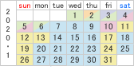
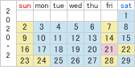
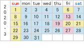
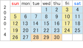
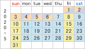
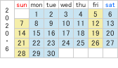
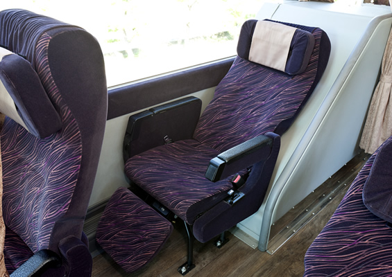
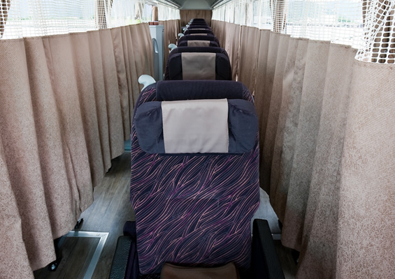
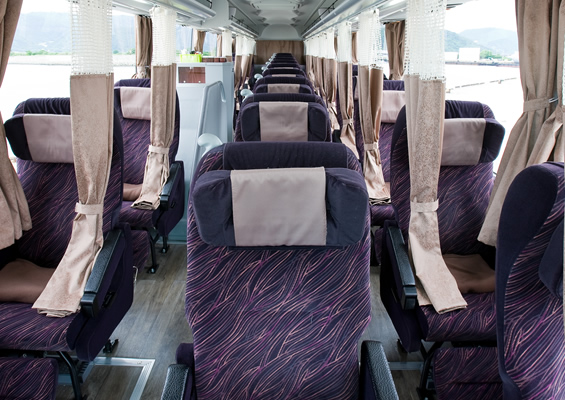

Timetable/Availability
Kochi ⇔ Nagoya / Yokkaichi
Kotobus tickets will be released 03 months in advance
Shutte bus
From Ehime to Koto Bus Station Naruto Interchange (Tokushima Prefecture), you will need to use a shuttle bus (Standard seat type might be equipped).
◆ Premium 3 Fare
Mishima Kawanoe
| Schedule A | Schedule B | Schedule C | Schedule D | Schedule E | Schedule F | |
|---|---|---|---|---|---|---|
| Normal fare |
6,600 yen | 7,100 yen | 7,600 yen | 8,100 yen | 8,600 yen | 9,100 yen |
| Early 7 |
5,400 yen | 5,900 yen | 6,400 yen | 8,100 yen | 8,600 yen | 9,100 yen |
| Early 21 |
5,100 yen | 5,600 yen | 6,100 yen | 8,100 yen | 8,600 yen | 9,100 yen |
Matsuyama
| Schedule A | Schedule B | Schedule C | Schedule D | Schedule E | Schedule F | |
|---|---|---|---|---|---|---|
| Normal fare |
7,100 yen | 7,600 yen | 8,100 yen | 8,600 yen | 9,100 yen | 9,600 yen |
| Early 7 |
5,900 yen | 6,400 yen | 6,900 yen | 8,600 yen | 9,100 yen | 9,600 yen |
| Early 21 |
5,600 yen | 6,100 yen | 6,600 yen | 8,600 yen | 9,100 yen | 9,600 yen |
- 
- 
- 
- 
- 
- 
Discount
Seat Lineup
-
- 
- 
- 
Premium 3
Your privacy is our utmost priority
Timetable
Please click on the name of a boarding/arrival location for a visual map
From Shikoku
| (SB) JR Kochi Station | 20：10 |
|---|---|
| Kosoku Miyoshi Bus Stop | 21：30 |
| ↓ | Take a shuttle bus |
| Kosoku Naruto IC | 22：50 |
| ↓ | ↓ |
| Kintetsu Yokkaichi Station West Bus Stop in front of Shimin Park | 5：55 |
| Sasashima Live Bus Stop | 7：00 |
From Chubu
| Assembly Point: In front of Yuri Fountain Boarding location: A bus stop in the north of Taikodori Exit |
22：30 |
|---|---|
| Kintetsu Yokkaichi Station West Bus Stop in front of Shimin Park | 23：40 |
| ↓ | ↓ |
| Kosoku Naruto IC | 6：10 |
| ↓ | Take a shuttle bus |
| Tokushima Miyoshi BS | 7：10 |
| (SB) JR Kochi Station | 8：30 |
* Kotobus's operating bus companies have voluntary insurance.
Transfer to a shuttle bus (SB)
NEWS
Express bus status and information
Express bus status
- October 24, 2019 15:00
- There is no suspension.
- October 23, 2019 15:38
- There is no suspension.
- October 22, 2019 15:00
- There is no suspension.
Information
- October 11, 2019 17:00
- [Regarding the suspension] Please check the following details.
Guidance
Kotobus
Column
-

Public transportation
Direct bus from Shikoku to Mitoyo
-

Public transportation
Direct bus from Shikoku to Mitoyo Udon Airport Shuttle, Kagawa Prefecture.
-

Mountain
Enjoy the stunning views in the Torigata Forest Park / Niyodogawa-cho, Kochi.
-

Public transportation
The original Akaishi River Bridge, Komatsushima City, Tokushima Prefecture.